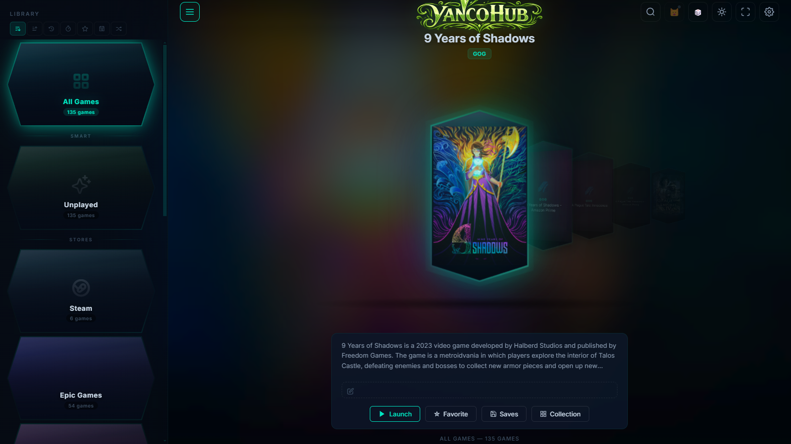

YancoHub puts your Steam, Epic, GOG, Xbox, EA, Ubisoft, Battle.net, locally installed games, and retro ROMs in one cinematic interface — with a built-in retro emulator and an optional AI assistant. Local-first, no telemetry, no required account.

YancoHub scans the stores you already use, the games you've put in a folder, and any ROMs you own. It then puts them all on one cinematic shelf — and gets out of your way.
Detects games from Steam, Epic, GOG, Xbox / Game Pass, EA, Ubisoft, and Battle.net automatically. Add your own folders for local installs.
Skip the store client whenever possible. Most GOG and Epic games can launch their .exe directly so you don't wait on the launcher to load.
Your SNES carts and your Steam library sit side by side. 19 systems boot inside the app via EmulatorJS — no separate program to open.
Plug in a local model (Ollama, LM Studio) or any OpenAI-compatible endpoint. Ask for tips, stuck-points, walkthroughs, screenshot help. Off by default; you choose the backend.
One-click backup of your game saves before you do anything risky. Restores automatically take a "before" snapshot too, so you can always roll back the rollback.
Full gamepad navigation for the carousel, the settings panel, every menu. Connect a DualSense or an Xbox controller and YancoHub turns into a couch interface.
YancoHub plays a lot of retro systems directly in-app via EmulatorJS. For the heavy modern emulators, it launches whatever you've already installed — it's a launcher, not a fork.
NES, SNES, Game Boy, GBC, GBA, Sega Genesis, Master System, Game Gear, Atari 2600, Neo Geo Pocket, PlayStation 1.
Drop a ROM file in and click play. The emulator core ships with YancoHub. PlayStation 1 uses an open-source BIOS that's already bundled.
Neo Geo, CPS1, CPS2, CPS3, MAME, Nintendo DS — plus N64 (works for most games, marked experimental).
YancoHub doesn't distribute proprietary BIOS files. Drop your own into the BIOS folder and the matching systems light up automatically.
For modern / heavy emulators, YancoHub launches the ones you already have installed — RetroArch, Dolphin, PCSX2, etc.
Point it at your RetroArch install in Settings → Emulation. YancoHub handles the launcher chrome and the library shelf; the emulator handles the emulation.
Windows 10 (1809 or later) and Windows 11. Both downloads run the same app — pick the one that fits how you install software.
Standard Windows installer. Creates Start Menu and Desktop shortcuts, registers an uninstaller, and stores your data under %LOCALAPPDATA%. Recommended for most people.
Single .zip — extract anywhere and run YancoHub.exe. All data stays inside the folder, perfect for a USB stick, a locked-down PC, or trying YancoHub without installing anything.